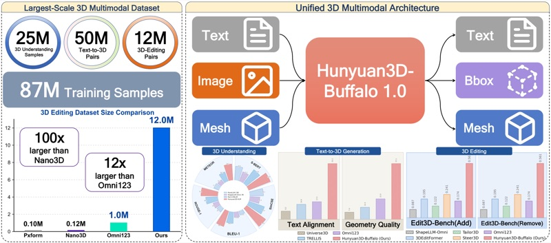

I'm Jingwei Xu (you can also call me David), a first-year PhD student at Monash University, advised by Prof. Jianfei Cai and Prof. Tien-Tsin Wong.
Before that, I received my MPhil degree from ShanghaiTech University, where I was supervised by Prof. Shenghua Gao and Prof. Xiaopei Liu.
During my MPhil, I also visited UC San Diego, where I was fortunate to have the opportunity to work with Prof. Anpei Chen.
I'm interested in generative models that understand
how things work, not just how they look.
Concretely, I study how to generate objects with structure, precise geometry, and function: how they are composed of parts, how they move, and how they are assembled.
Publications
(* denotes co-first authors, † denotes corresponding authors, ‡ also made major contributions)

Junliang Ye*,
Kenkun Liu*,
Guocun Wang*,
Yang Li*,
Yansong Qu*,
Chunshi Wang*,
Jingwei Xu,
Yunhan Yang,
Zibo Zhao,
Jiachen Xu,
Jiaao Yu,
Lifu Wang,
Zhihao Liang,
Xin Huang,
Zhuo Chen,
Chunchao Guo
[Project Page] [arXiv] [Code]
Tech Report 2026
(Contribute to part of the 3D understanding dataset)
Works
10/2025
06/2024
Finite Element Methods for Soft Body Simulation
[My Note][Code Taichi(unrelease)]
05/2024
01/2024
11/2022
08/2022
03/2022
Teaching
- Teaching Assistant
- ShanghaiTech CS172 (2023 Fall)
Academic Services
- Conference Reviewer
- ICLR 2025ICLR 2026CVPR 2026
- Journal Reviewer
- TMMTPAMI
Misc
- My hobbies include drawing, photography, comics and animation.
- I enjoy traveling to different countries and experiencing different cultures.